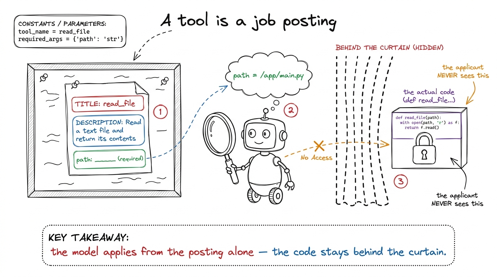
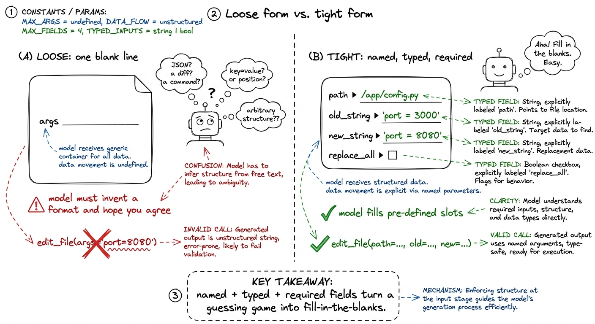
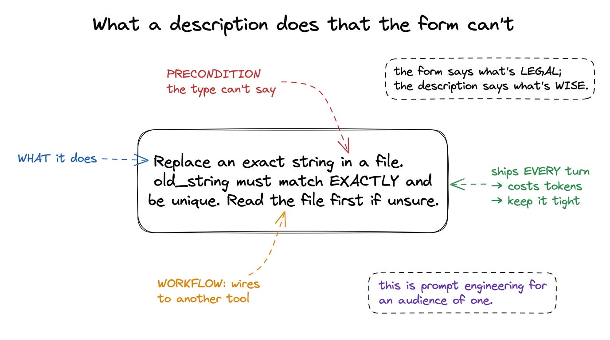
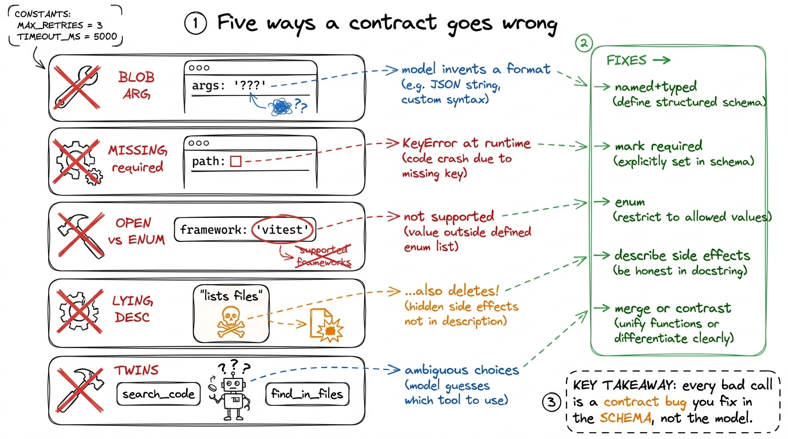

Teaching tools as contracts
By the end of this chapter you'll be able to stand at a whiteboard and teach why a tool is a contract, not a function — so clearly that a student who has never built an agent will understand, in their bones, that the model calls a tool by reading a little job description you wrote, and that writing that job description well is the whole game. We start from zero. No agents yet. Just a form, a job posting, and a very literal reader.
This is a quiet chapter with a loud payoff. Students arrive thinking the hard part of a tool is the code — the Python that reads the file or runs the command. You're going to gently flip that. The code is the easy half. The half that decides whether your agent feels magical or maddening is the few lines of prose and structure the model actually reads. Own this, and you own the difference between an agent that calls your tools like it wrote them and one that fumbles every call.
Start with the one idea: the model never sees your code
Here is the whole chapter in one sentence, and you should say it out loud early: the model never sees the function behind a tool. It sees only a name, a description, and a little form describing the arguments. From those three things alone it has to decide whether to call the tool, when, and with exactly what to fill in.

figure rendering · The core metaphor: a tool is a job posting. The model applies by readiA tool has two readers
Now sharpen it. A tool is written for two readers at once, and they read completely different halves of it. The model reads the name, the description, and the input schema — that is its entire universe. Your runtime reads none of that; it just receives a name and a bag of arguments and runs the matching function.
This is the fifty-year-old idea of interface versus implementation — the front of the vending machine (buttons and prices) versus the machinery inside — with one twist that changes how you write it. Your interface's reader is not a compiler checking types. It is a language model reasoning in plain English. So the interface is taught, not just declared. That twist is the whole reason this chapter exists.
read_file. Description: "Read a text file and return its contents." Schema: one field, path, of type string, marked required. That is everything the model knows. It has no idea whether your code opens the file with Python, SSHes into a server, or reads it off a floppy disk. Three cards. That's the contract.The schema is the enforcement half
The tool splits into two halves, and they do two different jobs. The schema — the little form describing the arguments — is the strict half. It is written in JSON Schema, the same small language of type, properties, required, and enum you may have seen in API validators. And here is the part that surprises everyone: on modern providers, the schema is wired directly into how the model generates text. A field you mark required will be present. A field you type as an integer comes back as 3, not the string "3". This isn't a polite request the model tries to honor. It is a hard constraint on generation.
enum: ["pytest", "jest", "go"], the model literally cannot emit "vitest" — that value is ungenerable. Students expect tool-calling to be flaky, best-effort, prompt-and-pray. It isn't. The structural part is enforced at generation time. That's the moment they realize a good schema is real engineering leverage, not documentation.Now show the difference between a loose form and a tight one, because that contrast is where the teaching lives.
# LOOSE — technically valid, quietly terrible
{
"name": "edit_file",
"description": "Edit a file.",
"input_schema": {
"type": "object",
"properties": {"args": {"type": "string"}} # a blob of anything
}
}That version runs. It won't error when you register it. But it teaches the model nothing. args is one blank line labeled "stuff." The model has to invent a convention — is it JSON? a diff? a shell one-liner? — and hope your function guesses the same one. Nothing is required, so it may leave out the very thing you need.
# TIGHT — the form does the teaching
{
"name": "edit_file",
"description": (
"Replace an exact string in a file with a new string. "
"old_string must match the file EXACTLY, including whitespace, "
"and must be unique. Read the file first if unsure."
),
"input_schema": {
"type": "object",
"properties": {
"path": {"type": "string", "description": "Absolute path to the file."},
"old_string": {"type": "string", "description": "Exact text to find. Must be unique."},
"new_string": {"type": "string", "description": "Text to replace it with."},
"replace_all": {"type": "boolean", "default": False,
"description": "Replace every occurrence instead of one."}
},
"required": ["path", "old_string", "new_string"]
}
}Every field earns its place. Named, typed, described arguments turn "change the port to 8080" into a fill-in-the-blanks the model can barely get wrong. The required list means you never get an edit with no target. The boolean with a default offers an option without forcing it.

figure rendering · A loose form makes the model invent a format and hope it matches yourThree levers on the form do most of the work, so name them so students reach for them deliberately. required decides what the model cannot forget — but only mark a field required if your function truly cannot proceed without it, or you'll push the model to fabricate a value just to satisfy the form. enum collapses an open field into a closed set of legal choices, and it's the single most underused lever in tool design. And types with defaults let you offer optional behavior without cluttering what's required.
required, thinking "more required = more reliable." It's the opposite. Draw a form with reason: ______ (required) on a tool that doesn't really need a reason. Then narrate: "The model must fill every required blank. If it has nothing real to put there, it will make something up — because a blank is illegal but an invention is allowed." Over-requiring manufactures hallucinations. The fix, said as a rule: require only what your function would genuinely crash without.The description is the coaching half
Now the softer half — and don't let "soft" fool anyone into thinking it's less important. The description is not documentation for humans who'll never read it. It is a piece of the prompt that ships to the model on every single turn, and the model weighs it every time it decides whether and how to call the tool. Writing a description is prompt engineering, aimed at one very literal reader.
A good description does three jobs the schema simply can't. First, it says when to reach for this tool versus another — "Read the file first if unsure" quietly wires two tools into a workflow. Second, it encodes preconditions the types can't express — that old_string must be unique, that a path must be absolute. A type: string can't say "and it has to be unique in the file." Only prose can. Third, it sets defaults of judgment — "default to pytest for Python" — so the model doesn't dither.

figure rendering · A description does three things the schema can't: state the mechanism,There is an honest cost here, and it's why descriptions must be tight, not merely thorough. Every tool's name, description, and schema get serialized into the context window on every turn, used or not. Ten verbose tools can burn thousands of tokens before the model reads a line of your code. So aim for the density of a good docstring: one crisp sentence of what, then the one or two preconditions that actually change behavior. If you're writing a paragraph, the tool is probably doing too much and wants splitting.
The failure gallery — every bad call is a contract bug
Here's the mindset shift to leave students with, and it's worth catologuing the failures so they can name them. When the model calls a tool wrong, the beginner's instinct is to scold it — add a line to the system prompt, "please always include the path." That's a plea. The fix almost always lives in the contract, and a fix in the contract is a guarantee. Walk them through the five recurring bugs:
- The blob argument. A single
args: stringforces the model to invent a serialization. It picks one, you parse another, and the mismatch looks like the model's fault but is yours. Fix: named, typed fields. - The missing
required. You needpathbut never marked it required, so on a fast turn the model omits it and your function throwsKeyError. The form promised nothing, so the model owed you nothing. Fix: mark it required. - The open field that should be an
enum. A free-stringframeworkinvites"unittest"when you support three runners. Fix: an enum makes the bad value ungenerable. - The lying description. The prose says "lists files" but the function also deletes empty ones. The model calls it expecting a harmless read — and destroys state it was never warned about. Fix: describe side effects honestly.
- The overlapping twins. Two tools,
search_codeandfind_in_files, with near-identical descriptions. The model flips a coin every turn. Fix: merge them, or contrast them sharply.

figure rendering · The five recurring contract bugs, each paired with the schema-level fiEdit tool has that precise "must match exactly and be unique" contract because a looser one produced ambiguous edits — the contract was tightened until the calls came back clean. pi ships a deliberately small set of sharp tools rather than a sprawl of narrow ones, precisely because every tool's schema costs tokens on every turn. Cursor's agent, Anthropic's own tool-use guidance — all of them land on the same lesson: the more your tool's inputs mirror how the model already thinks about the task, the fewer malformed calls you get. This is not academic. It is why these agents feel reliable.Validate anyway, and feed the error back
One honest caveat to close on. The form constrains generation, but it's not a force field. Arguments can be structurally valid and still semantically wrong — a perfectly-typed path string that points at a file which doesn't exist. So the runtime half still validates. And here's the part beginners skip: when validation fails, you return the error as a tool result, back into the loop, rather than crashing.
def run_tool(name, args):
if name == "read_file":
p = pathlib.Path(args["path"])
if not p.exists():
return f"ERROR: no such file: {p}. Use list_files to see what exists."
return p.read_text()That returned string is not a dead end — it's feedback. The model reads "no such file, use list_files," and on the next lap it corrects itself, often listing the directory and retrying with the right path, no human in the middle. A well-written error message is quietly one more clause of the contract: it teaches the model how to recover.
read_file with a tight schema, then ask the agent to read a file whose name you deliberately misspell in the prompt. Watch it call read_file, get your ERROR: no such file... use list_files string back, call list_files on its own, find the real name, and retry — all without you touching anything. The room goes quiet. That self-correction, driven entirely by a good error string, is the aha that ties tools to the durability layer coming later.You can now teach
- A tool as a contract, not a function — the model applies from the job posting (name + description + schema) and never sees the code behind the curtain.
- The two readers: the model reads the interface; your runtime reads the arguments and runs the hidden implementation.
- The schema as the enforcement half — required, enum, and typed-with-defaults are hard constraints on generation, demonstrated with a loose-vs-tight
edit_file. - The description as the coaching half — it states the mechanism, encodes preconditions the types can't, and wires tools into workflows, all as prompt shipped every turn.
- The failure gallery — blob args, missing required, open fields, lying descriptions, overlapping twins — and the reflex to fix the contract, not the prompt.
- Why you validate anyway and feed the error back into the loop, and how a good error string makes the agent self-correct — the seed of the durability layer.